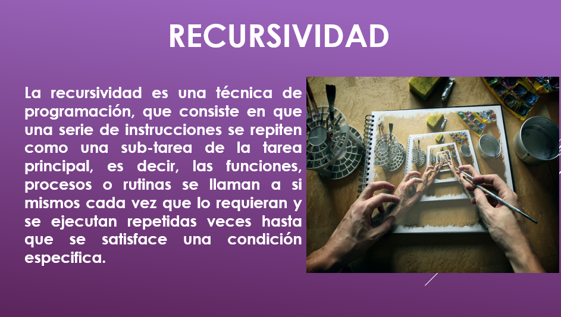
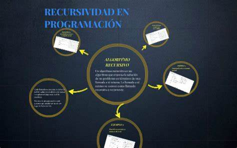

<!DOCTYPE html>
<html lang="en">
<head>
    <meta charset="UTF-8">
    <meta name="viewport" content="width=device-width, initial-scale=1.0">
    <title>Recursividad</title>
</head>
<body>
    
</body>
</html>
<div>
    <p class="h6">La recursividad es un concepto en programación donde una función se llama a sí misma para resolver un problema más pequeño del mismo tipo. Se utiliza para simplificar problemas complejos dividiéndolos en casos más simples y manejables. La recursividad es común en algoritmos y estructuras de datos, como la búsqueda en árboles, ordenamiento y problemas matemáticos.</p>
    <p class="h6">En la estructura y organización de datos, la recursividad se utiliza principalmente en el contexto de estructuras de datos recursivas. Una estructura de datos recursiva es aquella que puede definirse en términos de sí misma. Algunos ejemplos comunes son las listas enlazadas, los árboles y los grafos.</p>
    <div class="w-25">
        
    </div>
    <p class="h6">Por ejemplo, en un árbol binario, cada nodo puede tener dos subárboles, cada uno de los cuales es también un árbol binario. La definición de un árbol binario es recursiva, ya que un árbol binario está compuesto por un nodo y dos subárboles, y cada subárbol es, a su vez, un árbol binario.

        La recursividad en la estructura y organización de datos permite manejar de manera elegante y eficiente problemas complejos mediante la división en subproblemas más simples. Esto facilita la implementación de algoritmos para operaciones como búsqueda, inserción y eliminación en estructuras de datos recursivas.</p>
  </div>
            <h6 class="card-subtitle mb-2 text-body-secondary">Imagenes</h6>
            <div id="carouselExampleControls" class="carousel slide" data-bs-ride="carousel">
              <div class="carousel-inner">
                <div class="carousel-item active" data-bs-interval="3000">
                  
                </div>
  
                <div class="carousel-item" data-bs-interval="3000">
                  
                </div>
  
                <div class="carousel-item" data-bs-interval="3000">
                  
                </div>
  
              </div>
              <button class="carousel-control-prev" type="button" data-bs-target="#carouselExampleControls" data-bs-slide="prev">
                <span class="carousel-control-prev-icon" aria-hidden="true"></span>
                <span class="visually-hidden">anterior</span>
              </button>
              <button class="carousel-control-next" type="button" data-bs-target="#carouselExampleControls" data-bs-slide="next">
                <span class="carousel-control-next-icon" aria-hidden="true"></span>
                <span class="visually-hidden">siguiente</span>
              </button>
            </div>
            <p class="card-text">En conclusión, la recursividad es un concepto fundamental en programación y estructuras de datos que implica que una función se llame a sí misma para resolver instancias más pequeñas de un problema. Se utiliza para simplificar problemas complejos al dividirlos en subproblemas más manejables. La recursividad facilita la implementación de algoritmos eficientes y elegantes, especialmente en el contexto de estructuras de datos recursivas como árboles y listas enlazadas. Sin embargo, es crucial manejarla con cuidado para evitar posibles problemas de rendimiento y desbordamiento de pila.</p>
            
          </div>
        </div>
    </body>
  </html> 